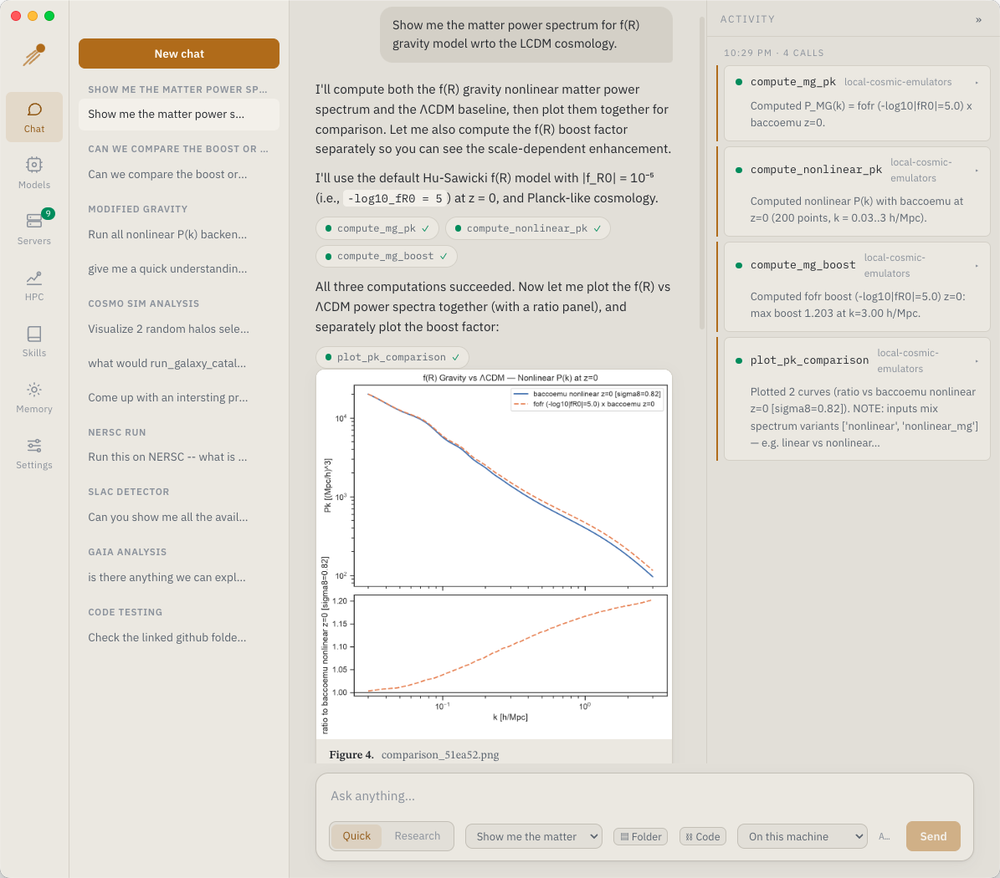

An agentic client for physics,
with HPC, MCP servers, and custom LLM endpoints.
HEP-Genesis-Agent is a desktop application and command-line client with native support to numerous science tools and skills. Compute locally or on DOE-HPC facilities. Customizable LLM endpoints at different stages of analysis.

What it does
The desktop app and the CLI share one backend, so projects, skills, and memory carry over.
Two chat modes
Quick calls tools directly. Research plans, runs each step, and ends with a written report.
MCP servers
Connect local (stdio) or hosted (HTTP) servers, including HEP-KE servers with OAuth sign-in.
Local or HPC
Send the same tool call to your machine, Polaris, or Perlmutter. Results come back to your laptop.
Figures and reports
Plots appear inline with captions. Reports are set like a preprint and export to PDF.
Your own LLMs
Any OpenAI-compatible endpoint, including lab gateways. You can use a different model for each stage.
Projects and provenance
Each project keeps its outputs, job artifacts, and provenance. Link a codebase for coding tasks.
| Platform | File | Status | |
|---|---|---|---|
| macOS · Apple silicon | HEP-Genesis-Agent-*-arm64.dmg | available | Download |
| Python backend + CLI | hep_genesis-*-py3-none-any.whl | available | Download |
| Windows | HEP-Genesis-Agent-Setup-*.exe | not yet published | |
| Linux | *.AppImage · *.deb | not yet published |
Chat and hosted tools
Most users only need the DMG. No Python required.
- chat, research runs, and PDF reports
- hosted MCP servers
- projects, skills, memory, and coding tasks
Local science servers and HPC dispatch
Add the Python wheel for:
- bundled local MCP servers
- Polaris and Perlmutter dispatch
- the
hep-genesis-agentCLI
HPC runs also need a facility allocation and Globus Connect Personal.
macOS app
Drag the app into /Applications. Alpha builds are unsigned, so macOS may say the app “is damaged”. It isn't. Run this once:
$ xattr -dr com.apple.quarantine "/Applications/HEP-Genesis-Agent.app"Python backend
Install the wheel into a fresh Python ≥ 3.10 environment:
$ conda create -n hep-genesis python=3.12 -y $ conda activate hep-genesis $ pip install 'hep_genesis-<version>-py3-none-any.whl[all]'
The app finds the environment automatically. If not, use HPC → Pick python.
The desktop app
Four steps on first launch. After that, it's mostly Chat.
Add a model endpoint
In Models, pick a preset or enter your gateway's URL and key.
Connect servers
Hosted servers connect automatically. Add your own in Servers.
Start the backend (optional)
For HPC, start the backend in HPC and sign in to ALCF or NERSC.
Chat
Pick Quick or Research, and where the compute runs.
| Chat | Conversations, tool calls, figures, reports |
| Models | Endpoints and per-stage models |
| Servers | MCP servers, tools, logs |
| HPC | Facility sign-in and jobs |
| Skills | Reusable agent recipes |
| Memory | Lessons the agent keeps between runs |
| Settings | Web and paper search, coding |
Command line
Everything works without the desktop app. The wheel installs the commands below.
Point it at a model. Per-stage overrides use LLM_PLANNER_*, LLM_WORKER_*, and LLM_SYNTHESIS_*.
$ export LLM_URL=https://your-gateway/v1 $ export LLM_MODEL=your-model $ export LLM_API_KEY=...
Ask a question. Outputs are saved to the project.
$ hep-genesis-agent "compute a test power spectrum" \
--project qcd-eos \
--servers module:hep_genesis.domain.mcp_server \
--servers "command:uvx duckduckgo-mcp-server"Projects live in ~/hep-genesis/projects. --resume continues an interrupted run.
$ hep-genesis-agent --list-projects $ hep-genesis-agent "…same query…" --project qcd-eos --resume
Link a codebase and add --coding. You approve each coding task.
$ hep-genesis-agent --project qcd-eos \ --link-codebase ~/code/my-analysis $ hep-genesis-agent "fit the slope of the downloaded HMF" \ --project qcd-eos --coding \ --servers module:hep_genesis.domain.mcp_server
Two sign-ins per facility: one for jobs, one for data transfer. Tokens refresh automatically.
# ALCF (Polaris) $ hep-genesis-alcf-auth $ hep-genesis-alcf-transfer-auth # NERSC (Perlmutter) $ hep-genesis-nersc-auth $ hep-genesis-nersc-transfer-auth
For ALCF's hosted models, sign in once. When a session expires, the error names the command to re-run.
# ALCF inference gateway (ALCF-FIRST model endpoint) $ hep-genesis-alcf-inference-auth
| hep-genesis-agent | The agent, headless. See --help. |
| hep-genesis-service | Backend service used by the desktop app |
| hep-genesis-domain | Science MCP server: datasets, papers, jobs |
| hep-genesis-alcf | ALCF facility MCP server |
| hep-genesis-nersc | NERSC facility MCP server |
| hep-genesis-alcf-auth | ALCF sign-in (jobs) |
| hep-genesis-alcf-transfer-auth | ALCF sign-in (data) |
| hep-genesis-alcf-inference-auth | ALCF hosted models |
| hep-genesis-nersc-auth | NERSC sign-in (jobs) |
| hep-genesis-nersc-transfer-auth | NERSC sign-in (data) |
How a dispatched run works
The agent calls the same tool it would run locally. Jobs keep running if you quit the app.
Stage
Inputs move to the facility over Globus.
Submit
Queued via the IRI API (PBS or Slurm).
Poll
Status and live logs in the Jobs list.
Read back
Logs and results are read over IRI.
Results
Artifacts land in your project.